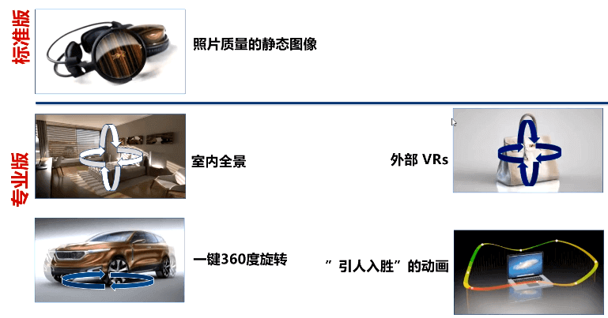
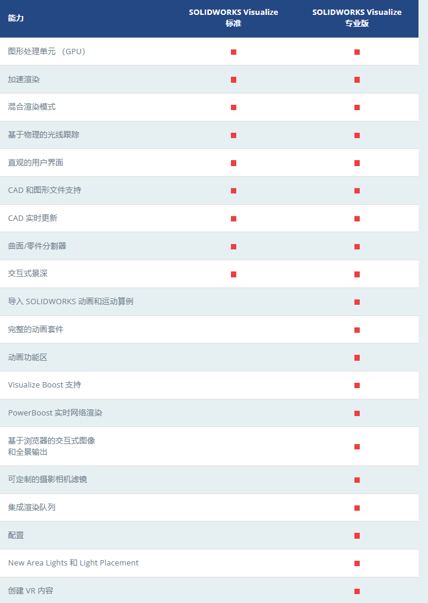
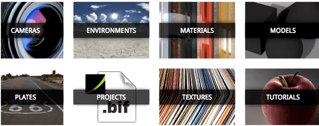
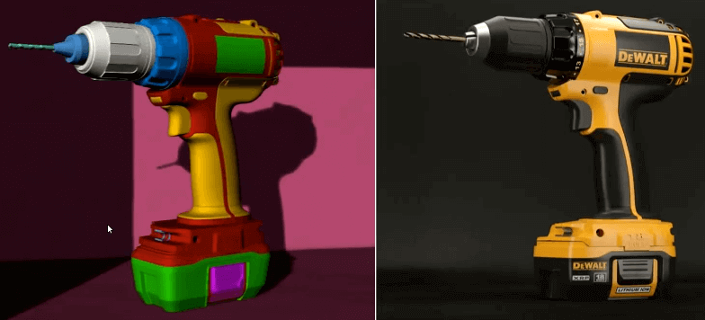
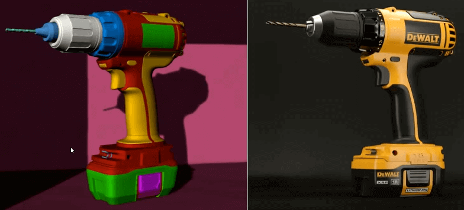
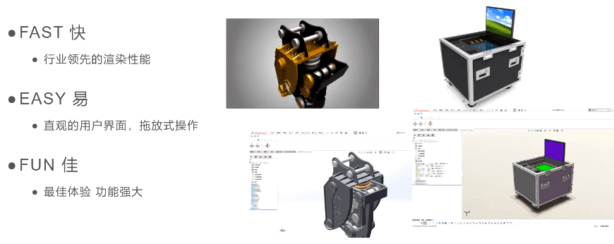
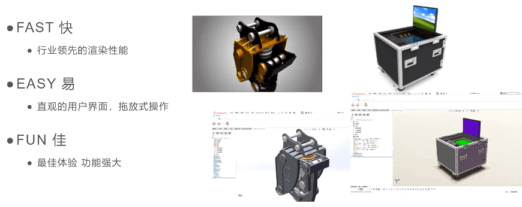

Visualize-简介
功能矩阵
 Visualize Boost
功能优势
支持多类3D格式
SOLIDWORKS实时关联更新
与solidworks协同工作:当您在solidworks中进行更新修改时，Visualize会提示更新:
混合渲染
SolidWorks Visualize 利用一个或多个CPU、或者单机上或网络上的GPU大大提升渲染性能。
利用性能强劲的或多个NVIDIA GPU用户可以提高整体性能，缩短渲染时间和更加高效创建内容。
云素材库
免费获得素材:材质、纹理、环境和背景，使用在您自己的可视化场景!同时提供教程，快速辅导你学习相关知识。
谁来使用？
设计部工程师
1.熟悉机械结构，但不精通视觉表现
2.尽量完成领导布置的任务
3.这不是市场部的事吗
项目经理
1.管理预算
2.顾虑设计数据安全性
3.没有不修改的设计，但是外包后的修改费用和周期承受不起
4.公司内部找不到合适的人去做这件事
5.项目整体上市周期
市场部专员
1.熟悉配色和视觉表现，但不精通机械结构
2.与设计部门沟通与协作
3.产品研发阶段同步创建市场宣传所需的材料
结果
1.领导给的任务，员工摸索一段时间并尝试给出效果图，但往往对效果不满意
2.只有典型的、重要的项目，才会花外包，且周期长费用贵
渲染的应用案例
 

应用的场景
 

回顾与总结
傻瓜式操作、客制化培训
1.材质、打光都有库
2.专业培训，迅速入门
3.易学易用，功能强大
更直接的渲染素材
1、设计部门即可提供一手素材
2、协同建立渲染流程
内部需求，内部解决
1.成本上升不大
2.数据不再外发
3.随时修改，随时反馈
4.设计人员就可制作
5.设计过程中即可提过渲染素材